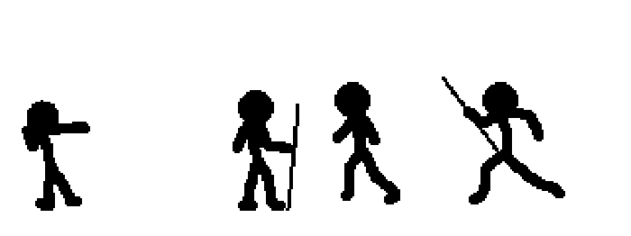
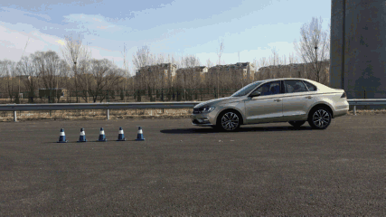

运动

运动实例：
运动基础：
让DIV动起来 定时器的使用：
DIV终止，判断时候到终点；
速度>>>>>speed
核心代码：
if(offsetLeft>=300){
clear..
//定时器的清零。
}else{
left++
}
定时器：动画既要不卡顿又不能浪费太多性能，一般选择30毫秒时间间隔
运动中点击加速问题：因为每次点击都开启了一个新的定时器，多个定时器叠加的结果造成了加速
解决方案：每次点击的时候把上一次开启的定时器先清除，并且timer此时必须修改为全局变量以确保能够清除上一次的定时器
异步：js单线程，异步代码单独执行
缓冲运动：

距离终点越近，速度越小
根据距离计算速度；距离和速度成正比；
speed = 距离终点的距离/10 ；
0.5px发生什么：向下取整。
speed=speed>0?Math.ceil(speed):Math.floor(speed);
这句代码是什么意思呢？请看下表
比如元素从左往右运动，left值从0加到100，运用如上公式的话，结果会是这样
步数 | 这一步运动的距离（速度） | 剩下的距离 |
1 | Math.ceil(100/10) = 10 | 90 |
2 | Math.ceil(90/10) = 9 | 81 |
3 | Math.ceil(81/10) = 9 | 72 |
4 | Math.ceil(72/10) = 8 | 64 |
5 | Math.ceil(64/10) = 7 | 57 |
... | ... | ... |
18 | Math.ceil(11/10) = 2 | 9 |
19 | Math.ceil(9/10) = 1 | 8 |
20 | Math.ceil(8/10) = 1 | 7 |
... | ... | ... |
| Math.ceil(2/10) = 1 | 1 |
| Math.ceil(1/10) = 1 | 0 |
练习
1、筋斗云效果
2、封装
3、侧边栏效果
4、焦点图淡入淡出